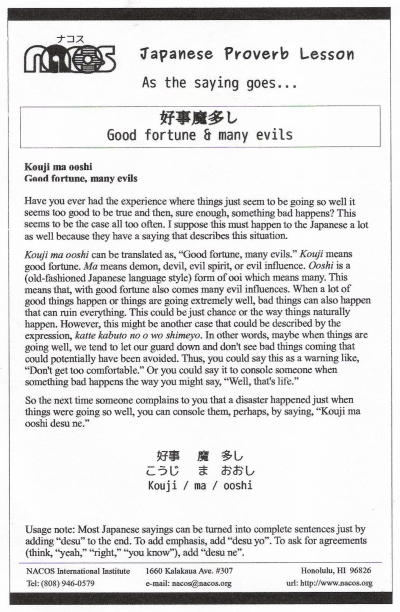

Kouji ma ooshi
Good fortune, many evils
Have you ever had the experience where things just seem to be going so well it seems too good to be true and then, sure enough, something bad happens? This seems to be the case all too often. I suppose this must happen to the Japanese a lot as well because they have a saying that describes this situation.
Kouji ma ooshi can be translated as, “Good fortune, many evils.” Kouji means good fortune. Ma means demon, devil, evil spirit, or evil influence. Ooshi is a (old-fashioned Japanese language style) form of ooi which means many. This means that, with good fortune also comes many evil influences. When a lot of good things happen or things are going extremely well, bad things can also happen that can ruin everything.This could be just chance or the way things naturally happen. However, this might be another case that could be described by the expression, katte kabuto no o wo shimeyo. In other words, maybe when things are going well, we tend to let our guard down and don't see bad things coming that could potentially have been avoided. Thus, you could say this as a warning like, “Don't get too comfortable.” Or you could say it to console someone when something bad happens the way you might say, “Well, that's life.”
So the next time someone complains to you that a disaster happened just when things were going so well, you can console them, perhaps, by saying, “Kouji ma ooshi desu ne.”
Usage note: Most Japanese sayings can be turned into complete sentences just by adding “desu” to the end. To add emphasis, add “desu yo”. To ask for agreements (think, “yeah,” “right,” “you know”), add “desu ne”.

| © 1995-2013 NACOS International Institute. All Rights Reserved. |